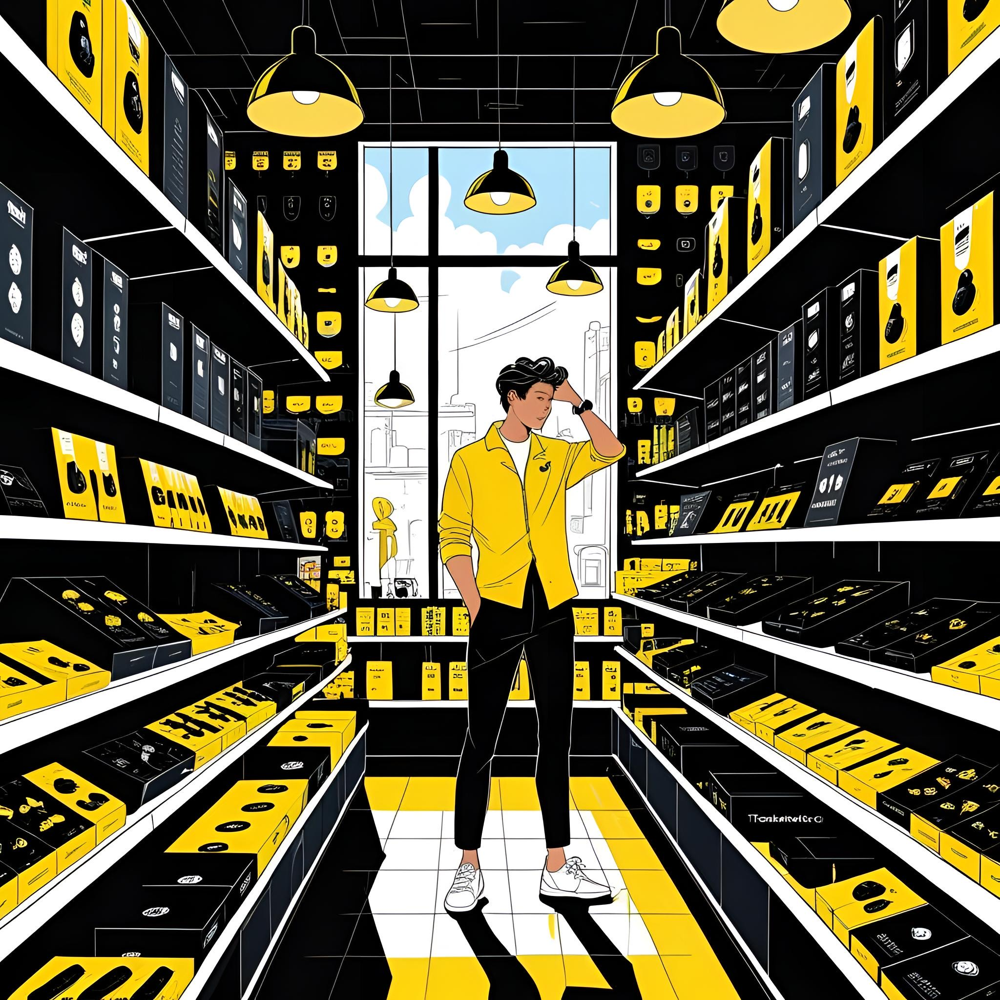

A TechMarket nasceu com o propósito de transformar a forma como as pessoas fazem suas compras do dia a dia.
Fundada em 2020, somos uma rede de mini supermercados automatizados e funcionais, operando 24 horas por dia com sistemas de autoatendimento práticos e seguros. Nossa missão é unir conveniência, tecnologia e inovação para oferecer uma experiência de compra rápida, moderna e acessível a todos.
Na TechMarket, acreditamos que o futuro do varejo é livre, conectado e 100% prático. Criamos negócios automatizados que funcionam 24h, oferecendo uma experiência de compra rápida, segura e sem filas. Nossos espaços inteligentes unem tecnologia e conveniência para que você tenha o que precisa, quando quiser. Estamos sempre inovando para simplificar sua rotina e levar praticidade — com um toque de futuro — até você.
